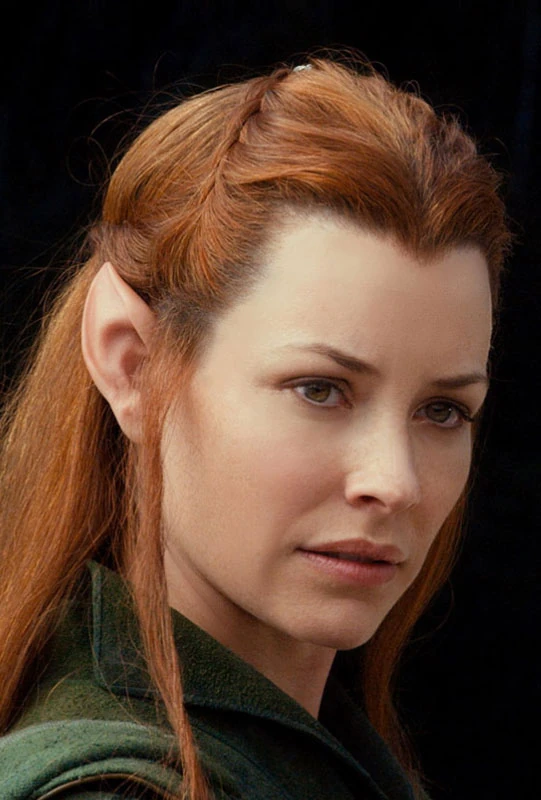
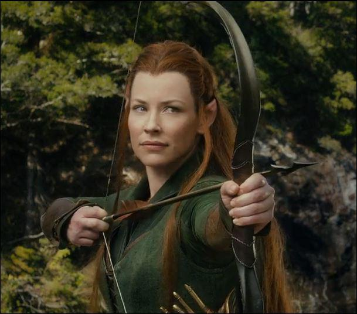

Tauriel, captain of the Elven Guard of Mirkwood, is a certified queen(in my heart).
Trained in archery and knife skills, she is an acrobatic beast that can take out swarms of orcs single-handedly.
When not serving in battle, she can be found retreating from Legolas' advances and finding a condemned romance with dwarf Kili.
Tauriel may be a warrior, but she finds there is more to life than just battle.
